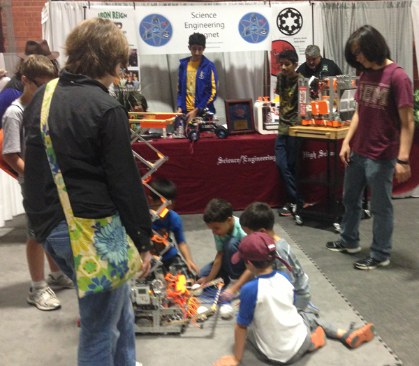

Dallas ISD Superintendent Mike Miles came by our booth where we were representing our Science and Engineering Magnet High School and sharing our STEM message with the community. Ms. Huitt, our principal was also there. Unfortunately we forgot to take any video while inside. Above Tycho is visiting with the solar car team from Ben Barber Tech in Mansfield.
Traffic was not great where our booth was, but we still got a lot of interest in our robot. We brought a subset of the field so that we could demonstrate better, and we linked the robot to the earth day theme by portraying the balls as debris that needs to be cleared after an environmental disaster.
